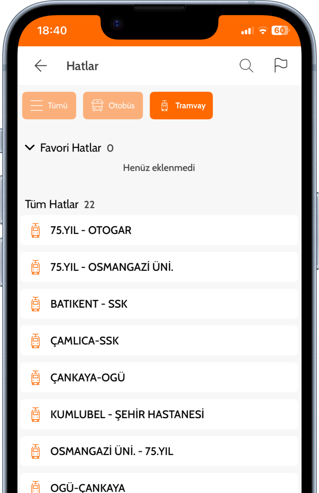

Mevcut deneyimde ne çalışmıyordu?
01 - Bilgiye ulaşmak ek çaba gerektiriyordu
Kullanıcının en sık ihtiyaç duyduğu tramvay saatleri, durak bilgileri ve hat detaylarına ana deneyimde ulaşmak fazla zaman ve çaba gerektiriyordu.

02 - Günlük kullanım senaryoları merkeze alınmamıştı
Kullanıcının "tramvay ne zaman geliyor?" veya "hangi duraktan binmeliyim?" gibi anlık ihtiyaçları daha doğrudan ulaşamamaktaydı.